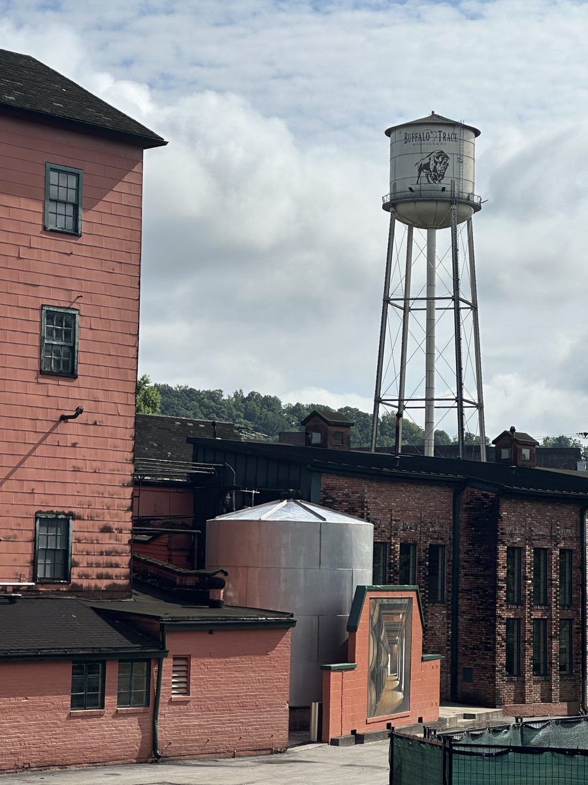
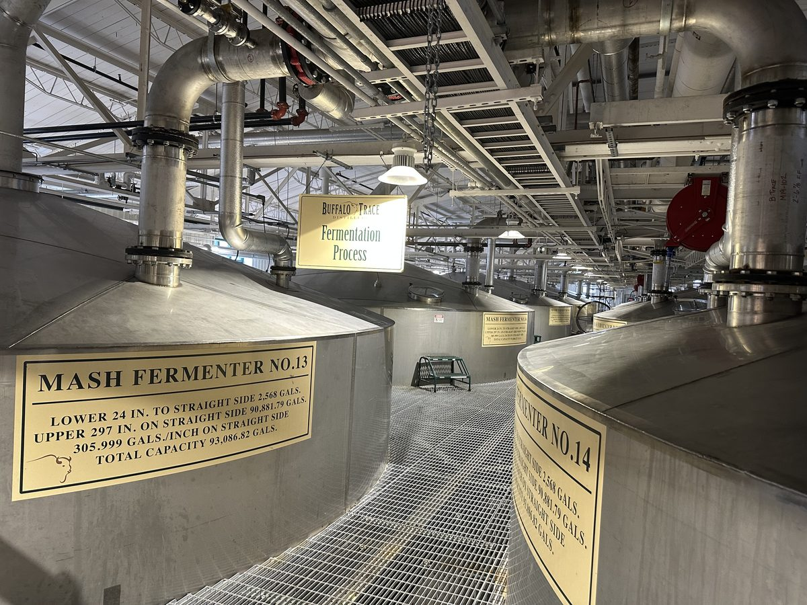
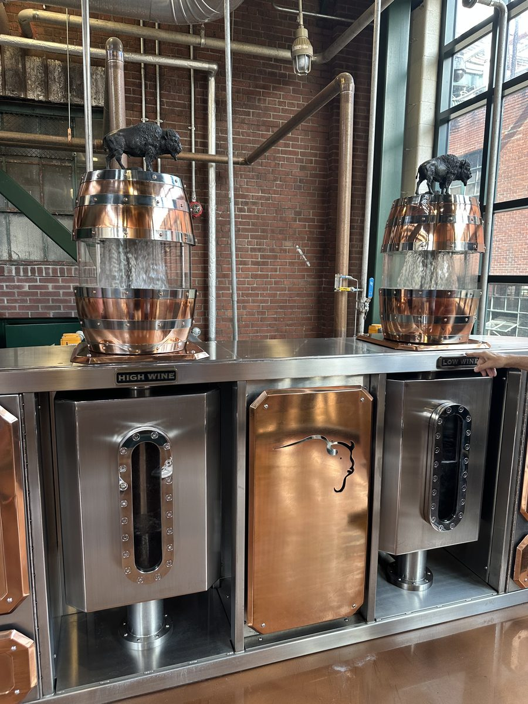
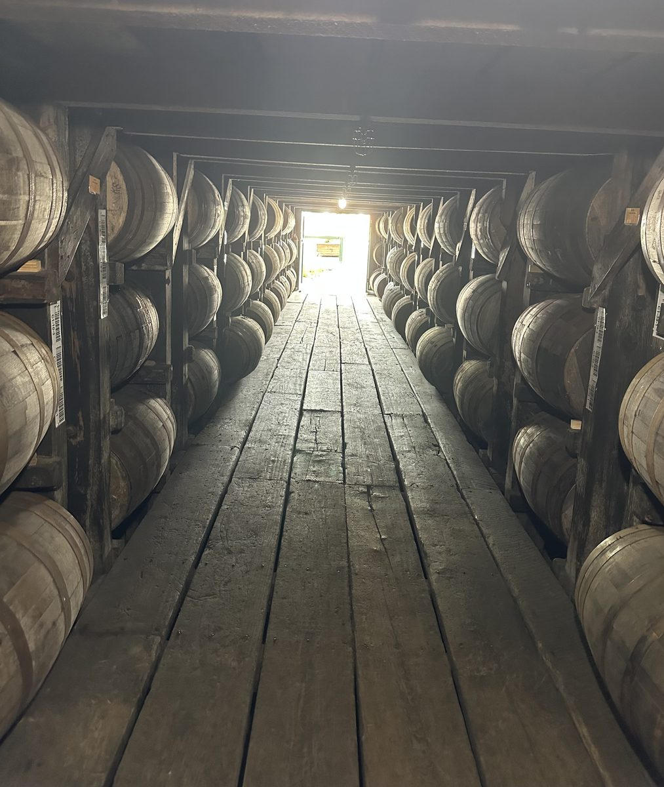

The most iconic distillery on the Bourbon Trail — home to Pappy Van Winkle, Blanton's, Eagle Rare, and their namesake Buffalo Trace. A National Historic Landmark with free tours and the hardest booking on the trail.
Buffalo Trace is the distillery everyone wants to visit — and for good reason. The campus is enormous and beautiful, sitting on the Kentucky River in Frankfort. It's been continuously operating since 1775 (making it the oldest continuously operating distillery in America, a claim they're proud of), and the place feels like it. Stone warehouses, copper stills, century-old buildings — there's a weight and history here that the newer distilleries can't replicate.
But here's the thing most people don't realize until they arrive: the experience is entirely free. Every tour, every tasting, no charge. That alone makes it one of the best values on the entire trail. The tradeoff is that it's also the hardest booking to get, especially for the Hard Hat Tour.
Plan to spend at least 2 hours here, even if your tour is only 60–90 minutes. The grounds are worth walking, the gift shop is extensive (and sometimes has allocated bottles — more on that below), and there's a peaceful quality to the riverside campus that rewards slowing down.




Buffalo Trace offers several tour options. Here's the honest breakdown on which ones are worth your time:
This is the one to get. The Hard Hat Tour takes you deeper into the production facility than any other tour — into the fermenting room, through the barrel warehouses, and past equipment most visitors never see. You'll wear a hard hat and closed-toe shoes are required. The guides are knowledgeable and the smaller group size means you can actually ask questions. This is the most popular tour on the entire Bourbon Trail, and it books out fast.
The standard tour and a great fallback if you can't get the Hard Hat. Covers the history of the distillery, the production process, and includes a tasting at the end. It's less in-depth than the Hard Hat but still a quality experience and you'll see the major highlights of the campus. Larger groups than the Hard Hat, but the guides keep it engaging.
Named for Colonel E.H. Taylor Jr., this tour focuses on the history of the distillery and the legendary figures behind it. A strong choice if you're more interested in the story and heritage than the production process — it's a bit more narrative-driven than the Hard Hat. Includes a tasting at the end. Easier to book than the Hard Hat and a worthwhile experience in its own right.
Buffalo Trace releases tour availability on their website in rolling windows. The Hard Hat Tour is the most competitive — when new dates drop, they can fill within hours. Here's the strategy:
Check availability frequently starting about 8 weeks before your trip. Buffalo Trace's booking page is the only place to reserve — there's no phone booking or third-party options. If the Hard Hat is sold out, check back. Cancellations happen, especially in the week before your visit. Weekday tours are significantly easier to get than Saturdays.
If you can't get the Hard Hat, book the Trace Tour and don't feel like you're settling — it's still a great experience. You're still visiting the same legendary campus, you're still getting a free tasting, and you're still getting access to the gift shop.
Tuesday through Thursday tours are the easiest to book and have the smallest crowds. If you can structure your itinerary to hit Buffalo Trace midweek, you'll have a much better experience — shorter gift shop lines, more personal tour interactions, and a better shot at finding allocated bottles.
The Buffalo Trace gift shop is one of the best on the trail, and it's the main reason some people visit. Daily offerings include Buffalo Trace bourbon, Weller Special Reserve (a big change from a few years ago when it was nearly impossible to find), Traveller Whiskey, and Sazerac Rye — all available every day at MSRP.
The allocated rotation is the real draw. Blanton's, Weller Antique 107, Eagle Rare, and E.H. Taylor Small Batch all rotate in and out — availability varies, and not every bottle is available every week. Buffalo Trace now posts each day's allocated bottle availability on their website each morning at buffalotracedistillery.com — check it before you leave your hotel. On rare occasions, special bottles beyond the standard rotation show up; when they do, they go fast.
Arrive early for the best selection. Gift shop inventory is first-come, first-served, and popular allocated bottles can sell out by midday on weekends. The gift shop does not hold bottles or take requests.
Some Frankfort liquor stores near Buffalo Trace mark up bottles significantly because tourists are willing to pay. If you're buying standard bottles like Buffalo Trace bourbon, the gift shop price is MSRP. Don't get talked into paying $40+ for a $25 bottle at a nearby shop.
We wrote a dedicated guide covering the weekly allocated rotation in detail — exactly how it works, what's available daily vs. what rotates, purchase limits, free tastings, timing strategy, and what's worth buying. Read the complete Buffalo Trace Gift Shop Guide →
Buffalo Trace recently opened an on-site cafe in the historic Elmer T. Lee Clubhouse — steps from the Visitor Center at the center of campus. The John G. Carlisle Cafe serves made-to-order lunch daily from 11am to 3pm: sandwiches, salads, desserts, and more. Walk-ins welcome, no reservation required.
The 1935 clubhouse retains its original woodwork, fireplace, and floors, with historical artifacts and archival displays throughout. It's a genuine pause point — a good place to sit down, eat something, and let the tour sink in before you hit the gift shop or head to your next stop.
Morning tours typically wrap between 11am and noon — right as the cafe opens. If you book an early tour, you can go straight from the tour to the cafe and still have time to browse the gift shop before the afternoon crowd arrives. The cafe closes at 3pm, so afternoon tours won't overlap.
Here's how Buffalo Trace stacks up across the categories we rate every distillery on:
Buffalo Trace is the single must-visit distillery on the Kentucky Bourbon Trail. Free tours of a National Historic Landmark producing some of the most coveted bourbon in America — it's a no-brainer. The only challenge is booking. Plan ahead, be flexible on dates, and don't stress if you get the Trace Tour instead of the Hard Hat. Either way, you'll leave understanding why this place is legendary. Put this one at the top of your list and build the rest of your trip around it.
Address: 113 Great Buffalo Trace, Frankfort, KY 40601
Hours: Monday–Saturday 9 AM – 5 PM, Sunday 12 PM – 5 PM (tour times vary, check website)
Parking: Free on-site lot, plenty of space on weekdays. Weekends can fill up — arrive 15–20 minutes before your tour.
Accessibility: Trace Tour is mostly accessible. Hard Hat Tour involves stairs and uneven surfaces — not wheelchair accessible.
Kids: Allowed on tours, but no tasting for anyone under 21 (obviously). The grounds are pleasant for families.
Buffalo Trace pairs naturally with other Frankfort-area stops. Here are the best options to combine in a day:
Beautiful restored pre-Prohibition distillery. Great gin and bourbon, stunning grounds.
Postcard-perfect campus in Versailles. Pairs well if you're coming from Bardstown direction.
Craft distillery in the Harrodsburg area. Small-batch approach with a personal, hands-on experience.
Excellent Italian in downtown Frankfort. Great break from Southern food after two days on the trail.
Buffalo Trace is featured in our 3-Day Bourbon Trail Itinerary as the anchor stop on Day 3 (Frankfort). It pairs with Woodford Reserve in the morning and optional craft stops in the afternoon.